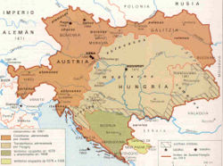

De: La Frikipedia, la enciclopedia extremadamente seria.
De: La Frikipedia, la enciclopedia extremadamente seria. De: La Frikipedia, la enciclopedia extremadamente seria.
| De la serie Países del planeta tierra: | |||||
| Die im Reichsrat vertretenen Königreiche und Länder und die Länder der heiligen ungarischen Stephanskrone
| |||||
|---|---|---|---|---|---|
| |||||
| Lema: "Las mejores salchichas son las del Viena" | |||||
| Himno: "Dios joda a los Rusos y a los Turcos"
| |||||
|  Austria en momentos bajos | |||||
| Capital | Viena | ||||
| Mayor ciudad | Frankfurt con ketchup | ||||
| Lenguas oficiales | Austríaco (llamado incorrectamente Alemán), un poco de italiano y nazi... y por supuesto, esperanto y sánscrito | ||||
| Gobierno | Imperio mostachista comunista nazi imperialista karlista | ||||
| Emperador de Austria, Rey de Hungría, Bohemia, Croacia (cruzadia en castellano), Eslovenia, Dalmacia, Galicia (va en serio) y Lodomeria y también Señor de Burronia. | Francisco Rodolfo Schwarzenegger XVII | ||||
| Área | Desde Francia a Rusia | ||||
| Población | Mucha | ||||
| Moneda | Espadas, bastos y copas | ||||
| Zona horaria | GTM+1 | ||||
| Dominio Internet | .Imper | ||||
| Código telefónico | 666
| ||||
| Viva el Viena y sus Frankfurts y viva el emperador | |||||
Austria, también llamada La Pequeña Alemania o La Alemania del Sur es el país más grande de Europa desde que ganó la Primera Guerra Mundial en 1914 en dos días. Tiene fronteras sólo con El Imperio Alemán de los poderosos reyes Merkel, con el Imperio Ruso de Vladimir Putin y sus lacayos, con la Italia Pizzera y con dos o tres pequeños países de por ahí. Sus fronteras son extensas, sobre todo por mar, y su armada es la más podersosa del mundo después de la Suiza y la Española. Tiene un afamado gobierno de locos que ningún otro país es capaz de entender.
Aunque en 1700 los austríacos había echado a los turcos de su casa, los alemanes, los franceses y los italianos les daban unas tundas destacadas en las guerra, y no lograban levantar la cabeza. Suerte que cuando hubo suerte participaron el la guerra civil española (1700-1714) y casi ganaron, pero fueron derrotados en el 11-S por los Borbones malvados del PP. Los austríacos tuvieron que conformarse con pegar a los eslovacos y a los polacos, que no se defendían tanto como los rusos, y así aguantaron hasta 1800, cuando un francés feo y bajito llamado Napoleón Bonaparte (Malaparte para los españoles y Bonney para los ingleses) atacó Austria dándoles una docena de palizas de las buenas a los ejércitos de húngaros de Austria. Suerte que los ingleses nunca pueden perder y salvaron a los austríacos del desastre, consiguiendo que estos fueran al fin un gran imperio relativo.
El Führer austríaco llamado Metternich prohibió votar, ser comunista y un montón de cosas divertidas, causando revoluciones en su contra, lo que obligó al emperador a despedirle. Por culpa de este vil acto, los italianos pizzeros consiquieron quitarle un par de comarcas a los austríacos, al igual que los alemanes del norte. Sólo los turcos eran derrotados de vez en cuando por Austria. Hubo suerte y en 1914, McGyver mató al heredero del Imperio, lo que permitió a Austria dominar toda Europa con la Primera Guerra Mundial, conquistando dieciocho países y tres naciones. En la Segunda Guerra Mundial, un estadista alemán de cuyo nombre no quiere acordarse nadie unió Alemania con Austria, creando el mayor Imperio jamás visto, pero la unión duró solo unos años, hasta que Austria ganó la Segunda Guerra Mundial y dio la ordend e dividir Alemania en la zona comunista y la zona zapitalista.
El jefe mandamás de Austria es el Emperador de Austria, Rey de Hungría, Bohemia, Croacia (cruzadia en castellano), Eslovenia, Dalmacia, Galicia (va en serio) y Lodomeria y también Señor de Burronia. Aprenderse esto es lo que en España era aprenderse los nombres de los reyes Visigordos. Este buen señor hace lo que la da la gana, como invadir países o ejecutar rebeldes, como dice la consitución vigente de 1883. Nadie tiene cojones pare enfrentarse a él (Sólo Dios y Chuck Norris, pero son amigos de Austria).
La política exterior de Austria se mantiene como una política denominada de "¡¡¡A LAS ARMAS DE UNA PUTA VEZ!!!", en la cual se destacan los siguientes puntos:
La nación se divide en una serie de estados de tamaños que van de dos metros cuadrados hasta 90.000 kilómetros cuadrados. Todos son no autónomos, es decir, que no tienen Estatutos de Autonomía como el de Cataluña. Los estados son numerosos, y dejando de lado los más microscópicos, son estos:
Como hay regiones en tantos rincones, además de pseudoalemanes, en Austria hay también húngaros, croatas, serbios, chinos, coreanos, judíos, nazis y gente de nosecuántas etnia más de nombre raro.
Como dice el himno austríaco compuesto por Mozart, Austria es una nación de Montañas de mierda y ríos de pis.Siendo menos serios, la mayor parte del territorio de Austria está dentro de la sección oriental de los montes Austríacos (llamados a veces Alpes o Cárpatos). Hay un montón de lagos en la frontera con Suiza. El lago Constanza es el más grande del país y forma la frontera oeste con Liechtenstein y Suiza. Allí realizó sus experimentos el famosísimo barón Von Zeppelin.
La gastroenteritis en Austria es causada por la Gastronomía, que ha sido denominada incorrectamente, malvadamente, hitlerianamente y satánicamente a veces como cocina del VIENA (Frankfurts, algún vals, patatas fritas con ketchup, dos o tres hamburguesas bávaras...), se puede decir que nació como una derivación láctea de meterle leche al estofado de carne. Entre las influencias que posee de otras cocinas tradicionales europeas cabe resaltar las que provienen de las cocinas de Burronia, Chequia, y judía así como con claras influencias de la cocina Nazi y de la cocina de Cataluña, de las que ha tomado prestado no sólo algunos métodos sino que también algunos ingredientes, como El pa amb tomáquet. La cocina de Austria es conocida en el resto del mundo por sus bollicaos, sus frankurts con ketchup barato Prima y dulces, un ejemplo de esto son los huevos Kinder (ideados inicalmente por Hitler para controlar la mente de los jóvenes alemanes),la mayoría de las veces acompañados con una taza de café del de Willy Bonka.
  Imperios de Europa Imperios de Europa
|
|---|
| Eslovaquia |
Autor(es):